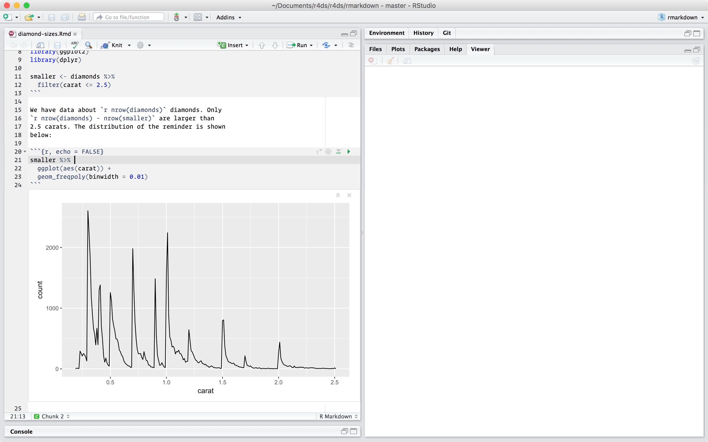
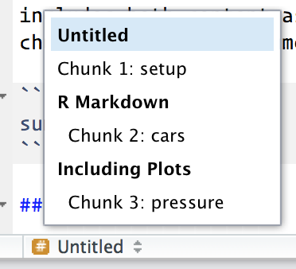

27 R Markdown
27.1 Introduction
R Markdown provides an unified authoring framework for data science, combining your code, its results, and your prose commentary. R Markdown documents are fully reproducible and support dozens of output formats, like PDFs, Word files, slideshows, and more.
R Markdown files are designed to be used in three ways:
For communicating to decision makers, who want to focus on the conclusions, not the code behind the analysis.
For collaborating with other data scientists (including future you!), who are interested in both your conclusions, and how you reached them (i.e. the code).
As an environment in which to do data science, as a modern day lab notebook where you can capture not only what you did, but also what you were thinking.
R Markdown integrates a number of R packages and external tools. This means that help is, by-and-large, not available through ?. Instead, as you work through this chapter, and use R Markdown in the future, keep these resources close to hand:
R Markdown Cheat Sheet: Help > Cheatsheets > R Markdown Cheat Sheet,
R Markdown Reference Guide: Help > Cheatsheets > R Markdown Reference Guide.
Both cheatsheets are also available at https://rstudio.com/resources/cheatsheets/.
27.1.1 Prerequisites
You need the rmarkdown package, but you don’t need to explicitly install it or load it, as RStudio automatically does both when needed.
27.2 R Markdown basics
This is an R Markdown file, a plain text file that has the extension .Rmd:
---
title: "Diamond sizes"
date: 2016-08-25
output: html_document
---
```{r setup, include = FALSE}
library(ggplot2)
library(dplyr)
smaller <- diamonds %>%
filter(carat <= 2.5)
```
We have data about `r nrow(diamonds)` diamonds. Only
`r nrow(diamonds) - nrow(smaller)` are larger than
2.5 carats. The distribution of the remainder is shown
below:
```{r, echo = FALSE}
smaller %>%
ggplot(aes(carat)) +
geom_freqpoly(binwidth = 0.01)
```It contains three important types of content:
- An (optional) YAML header surrounded by
---s. - Chunks of R code surrounded by
```. - Text mixed with simple text formatting like
# headingand_italics_.
When you open an .Rmd, you get a notebook interface where code and output are interleaved. You can run each code chunk by clicking the Run icon (it looks like a play button at the top of the chunk), or by pressing Cmd/Ctrl + Shift + Enter. RStudio executes the code and displays the results inline with the code:

To produce a complete report containing all text, code, and results, click “Knit” or press Cmd/Ctrl + Shift + K. You can also do this programmatically with rmarkdown::render("1-example.Rmd"). This will display the report in the viewer pane, and create a self-contained HTML file that you can share with others.

When you knit the document, R Markdown sends the .Rmd file to knitr, http://yihui.name/knitr/, which executes all of the code chunks and creates a new markdown (.md) document which includes the code and its output. The markdown file generated by knitr is then processed by pandoc, http://pandoc.org/, which is responsible for creating the finished file. The advantage of this two step workflow is that you can create a very wide range of output formats, as you’ll learn about in R markdown formats.

To get started with your own .Rmd file, select File > New File > R Markdown… in the menubar. RStudio will launch a wizard that you can use to pre-populate your file with useful content that reminds you how the key features of R Markdown work.
The following sections dive into the three components of an R Markdown document in more details: the markdown text, the code chunks, and the YAML header.
27.2.1 Exercises
Create a new notebook using File > New File > R Notebook. Read the instructions. Practice running the chunks. Verify that you can modify the code, re-run it, and see modified output.
Create a new R Markdown document with File > New File > R Markdown… Knit it by clicking the appropriate button. Knit it by using the appropriate keyboard short cut. Verify that you can modify the input and see the output update.
Compare and contrast the R notebook and R markdown files you created above. How are the outputs similar? How are they different? How are the inputs similar? How are they different? What happens if you copy the YAML header from one to the other?
Create one new R Markdown document for each of the three built-in formats: HTML, PDF and Word. Knit each of the three documents. How does the output differ? How does the input differ? (You may need to install LaTeX in order to build the PDF output — RStudio will prompt you if this is necessary.)
27.3 Text formatting with Markdown
Prose in .Rmd files is written in Markdown, a lightweight set of conventions for formatting plain text files. Markdown is designed to be easy to read and easy to write. It is also very easy to learn. The guide below shows how to use Pandoc’s Markdown, a slightly extended version of Markdown that R Markdown understands.
Text formatting
------------------------------------------------------------
*italic* or _italic_
**bold** __bold__
`code`
superscript^2^ and subscript~2~
Headings
------------------------------------------------------------
# 1st Level Header
## 2nd Level Header
### 3rd Level Header
Lists
------------------------------------------------------------
* Bulleted list item 1
* Item 2
* Item 2a
* Item 2b
1. Numbered list item 1
1. Item 2. The numbers are incremented automatically in the output.
Links and images
------------------------------------------------------------
<http://example.com>
[linked phrase](http://example.com)

Tables
------------------------------------------------------------
First Header | Second Header
------------- | -------------
Content Cell | Content Cell
Content Cell | Content CellThe best way to learn these is simply to try them out. It will take a few days, but soon they will become second nature, and you won’t need to think about them. If you forget, you can get to a handy reference sheet with Help > Markdown Quick Reference.
27.3.1 Exercises
Practice what you’ve learned by creating a brief CV. The title should be your name, and you should include headings for (at least) education or employment. Each of the sections should include a bulleted list of jobs/degrees. Highlight the year in bold.
Using the R Markdown quick reference, figure out how to:
- Add a footnote.
- Add a horizontal rule.
- Add a block quote.
Copy and paste the contents of
diamond-sizes.Rmdfrom https://github.com/hadley/r4ds/tree/master/rmarkdown in to a local R markdown document. Check that you can run it, then add text after the frequency polygon that describes its most striking features.
27.4 Code chunks
To run code inside an R Markdown document, you need to insert a chunk. There are three ways to do so:
The keyboard shortcut Cmd/Ctrl + Alt + I
The “Insert” button icon in the editor toolbar.
By manually typing the chunk delimiters
```{r}and```.
Obviously, I’d recommend you learn the keyboard shortcut. It will save you a lot of time in the long run!
You can continue to run the code using the keyboard shortcut that by now (I hope!) you know and love: Cmd/Ctrl + Enter. However, chunks get a new keyboard shortcut: Cmd/Ctrl + Shift + Enter, which runs all the code in the chunk. Think of a chunk like a function. A chunk should be relatively self-contained, and focussed around a single task.
The following sections describe the chunk header which consists of ```{r, followed by an optional chunk name, followed by comma separated options, followed by }. Next comes your R code and the chunk end is indicated by a final ```.
27.4.1 Chunk name
Chunks can be given an optional name: ```{r by-name}. This has three advantages:
You can more easily navigate to specific chunks using the drop-down code navigator in the bottom-left of the script editor:

Graphics produced by the chunks will have useful names that make them easier to use elsewhere. More on that in other important options.
You can set up networks of cached chunks to avoid re-performing expensive computations on every run. More on that below.
There is one chunk name that imbues special behaviour: setup. When you’re in a notebook mode, the chunk named setup will be run automatically once, before any other code is run.
27.4.2 Chunk options
Chunk output can be customised with options, arguments supplied to chunk header. Knitr provides almost 60 options that you can use to customize your code chunks. Here we’ll cover the most important chunk options that you’ll use frequently. You can see the full list at http://yihui.name/knitr/options/.
The most important set of options controls if your code block is executed and what results are inserted in the finished report:
eval = FALSEprevents code from being evaluated. (And obviously if the code is not run, no results will be generated). This is useful for displaying example code, or for disabling a large block of code without commenting each line.include = FALSEruns the code, but doesn’t show the code or results in the final document. Use this for setup code that you don’t want cluttering your report.echo = FALSEprevents code, but not the results from appearing in the finished file. Use this when writing reports aimed at people who don’t want to see the underlying R code.message = FALSEorwarning = FALSEprevents messages or warnings from appearing in the finished file.results = 'hide'hides printed output;fig.show = 'hide'hides plots.error = TRUEcauses the render to continue even if code returns an error. This is rarely something you’ll want to include in the final version of your report, but can be very useful if you need to debug exactly what is going on inside your.Rmd. It’s also useful if you’re teaching R and want to deliberately include an error. The default,error = FALSEcauses knitting to fail if there is a single error in the document.
The following table summarises which types of output each option suppresses:
| Option | Run code | Show code | Output | Plots | Messages | Warnings |
|---|---|---|---|---|---|---|
eval = FALSE |
- | - | - | - | - | |
include = FALSE |
- | - | - | - | - | |
echo = FALSE |
- | |||||
results = "hide" |
- | |||||
fig.show = "hide" |
- | |||||
message = FALSE |
- | |||||
warning = FALSE |
- |
27.4.3 Table
By default, R Markdown prints data frames and matrices as you’d see them in the console:
mtcars[1:5, ]
#> mpg cyl disp hp drat wt qsec vs am gear carb
#> Mazda RX4 21.0 6 160 110 3.90 2.620 16.46 0 1 4 4
#> Mazda RX4 Wag 21.0 6 160 110 3.90 2.875 17.02 0 1 4 4
#> Datsun 710 22.8 4 108 93 3.85 2.320 18.61 1 1 4 1
#> Hornet 4 Drive 21.4 6 258 110 3.08 3.215 19.44 1 0 3 1
#> Hornet Sportabout 18.7 8 360 175 3.15 3.440 17.02 0 0 3 2If you prefer that data be displayed with additional formatting you can use the knitr::kable function. The code below generates Table 27.1.
knitr::kable(
mtcars[1:5, ],
caption = "A knitr kable."
)| mpg | cyl | disp | hp | drat | wt | qsec | vs | am | gear | carb | |
|---|---|---|---|---|---|---|---|---|---|---|---|
| Mazda RX4 | 21.0 | 6 | 160 | 110 | 3.90 | 2.620 | 16.46 | 0 | 1 | 4 | 4 |
| Mazda RX4 Wag | 21.0 | 6 | 160 | 110 | 3.90 | 2.875 | 17.02 | 0 | 1 | 4 | 4 |
| Datsun 710 | 22.8 | 4 | 108 | 93 | 3.85 | 2.320 | 18.61 | 1 | 1 | 4 | 1 |
| Hornet 4 Drive | 21.4 | 6 | 258 | 110 | 3.08 | 3.215 | 19.44 | 1 | 0 | 3 | 1 |
| Hornet Sportabout | 18.7 | 8 | 360 | 175 | 3.15 | 3.440 | 17.02 | 0 | 0 | 3 | 2 |
Read the documentation for ?knitr::kable to see the other ways in which you can customise the table. For even deeper customisation, consider the xtable, stargazer, pander, tables, and ascii packages. Each provides a set of tools for returning formatted tables from R code.
There is also a rich set of options for controlling how figures are embedded. You’ll learn about these in saving your plots.
27.4.4 Caching
Normally, each knit of a document starts from a completely clean slate. This is great for reproducibility, because it ensures that you’ve captured every important computation in code. However, it can be painful if you have some computations that take a long time. The solution is cache = TRUE. When set, this will save the output of the chunk to a specially named file on disk. On subsequent runs, knitr will check to see if the code has changed, and if it hasn’t, it will reuse the cached results.
The caching system must be used with care, because by default it is based on the code only, not its dependencies. For example, here the processed_data chunk depends on the raw_data chunk:
```{r raw_data}
rawdata <- readr::read_csv("a_very_large_file.csv")
```
```{r processed_data, cache = TRUE}
processed_data <- rawdata %>%
filter(!is.na(import_var)) %>%
mutate(new_variable = complicated_transformation(x, y, z))
```Caching the processed_data chunk means that it will get re-run if the dplyr pipeline is changed, but it won’t get rerun if the read_csv() call changes. You can avoid that problem with the dependson chunk option:
```{r processed_data, cache = TRUE, dependson = "raw_data"}
processed_data <- rawdata %>%
filter(!is.na(import_var)) %>%
mutate(new_variable = complicated_transformation(x, y, z))
```dependson should contain a character vector of every chunk that the cached chunk depends on. Knitr will update the results for the cached chunk whenever it detects that one of its dependencies have changed.
Note that the chunks won’t update if a_very_large_file.csv changes, because knitr caching only tracks changes within the .Rmd file. If you want to also track changes to that file you can use the cache.extra option. This is an arbitrary R expression that will invalidate the cache whenever it changes. A good function to use is file.info(): it returns a bunch of information about the file including when it was last modified. Then you can write:
```{r raw_data, cache.extra = file.info("a_very_large_file.csv")}
rawdata <- readr::read_csv("a_very_large_file.csv")
```As your caching strategies get progressively more complicated, it’s a good idea to regularly clear out all your caches with knitr::clean_cache().
I’ve used the advice of David Robinson to name these chunks: each chunk is named after the primary object that it creates. This makes it easier to understand the dependson specification.
27.4.5 Global options
As you work more with knitr, you will discover that some of the default chunk options don’t fit your needs and you want to change them. You can do this by calling knitr::opts_chunk$set() in a code chunk. For example, when writing books and tutorials I set:
knitr::opts_chunk$set(
comment = "#>",
collapse = TRUE
)This uses my preferred comment formatting, and ensures that the code and output are kept closely entwined. On the other hand, if you were preparing a report, you might set:
knitr::opts_chunk$set(
echo = FALSE
)That will hide the code by default, so only showing the chunks you deliberately choose to show (with echo = TRUE). You might consider setting message = FALSE and warning = FALSE, but that would make it harder to debug problems because you wouldn’t see any messages in the final document.
27.4.6 Inline code
There is one other way to embed R code into an R Markdown document: directly into the text, with: `r `. This can be very useful if you mention properties of your data in the text. For example, in the example document I used at the start of the chapter I had:
We have data about
`r nrow(diamonds)`diamonds. Only`r nrow(diamonds) - nrow(smaller)`are larger than 2.5 carats. The distribution of the remainder is shown below:
When the report is knit, the results of these computations are inserted into the text:
We have data about 53940 diamonds. Only 126 are larger than 2.5 carats. The distribution of the remainder is shown below:
When inserting numbers into text, format() is your friend. It allows you to set the number of digits so you don’t print to a ridiculous degree of accuracy, and a big.mark to make numbers easier to read. I’ll often combine these into a helper function:
comma <- function(x) format(x, digits = 2, big.mark = ",")
comma(3452345)
#> [1] "3,452,345"
comma(.12358124331)
#> [1] "0.12"27.4.7 Exercises
Add a section that explores how diamond sizes vary by cut, colour, and clarity. Assume you’re writing a report for someone who doesn’t know R, and instead of setting
echo = FALSEon each chunk, set a global option.Download
diamond-sizes.Rmdfrom https://github.com/hadley/r4ds/tree/master/rmarkdown. Add a section that describes the largest 20 diamonds, including a table that displays their most important attributes.Modify
diamonds-sizes.Rmdto usecomma()to produce nicely formatted output. Also include the percentage of diamonds that are larger than 2.5 carats.Set up a network of chunks where
ddepends oncandb, and bothbandcdepend ona. Have each chunk printlubridate::now(), setcache = TRUE, then verify your understanding of caching.
27.5 Troubleshooting
Troubleshooting R Markdown documents can be challenging because you are no longer in an interactive R environment, and you will need to learn some new tricks. The first thing you should always try is to recreate the problem in an interactive session. Restart R, then “Run all chunks” (either from Code menu, under Run region), or with the keyboard shortcut Ctrl + Alt + R. If you’re lucky, that will recreate the problem, and you can figure out what’s going on interactively.
If that doesn’t help, there must be something different between your interactive environment and the R markdown environment. You’re going to need to systematically explore the options. The most common difference is the working directory: the working directory of an R Markdown is the directory in which it lives. Check the working directory is what you expect by including getwd() in a chunk.
Next, brainstorm all the things that might cause the bug. You’ll need to systematically check that they’re the same in your R session and your R markdown session. The easiest way to do that is to set error = TRUE on the chunk causing the problem, then use print() and str() to check that settings are as you expect.
27.6 YAML header
You can control many other “whole document” settings by tweaking the parameters of the YAML header. You might wonder what YAML stands for: it’s “yet another markup language”, which is designed for representing hierarchical data in a way that’s easy for humans to read and write. R Markdown uses it to control many details of the output. Here we’ll discuss two: document parameters and bibliographies.
27.6.1 Parameters
R Markdown documents can include one or more parameters whose values can be set when you render the report. Parameters are useful when you want to re-render the same report with distinct values for various key inputs. For example, you might be producing sales reports per branch, exam results by student, or demographic summaries by country. To declare one or more parameters, use the params field.
This example uses a my_class parameter to determine which class of cars to display:
---
output: html_document
params:
my_class: "suv"
---
```{r setup, include = FALSE}
library(ggplot2)
library(dplyr)
class <- mpg %>% filter(class == params$my_class)
```
# Fuel economy for `r params$my_class`s
```{r, message = FALSE}
ggplot(class, aes(displ, hwy)) +
geom_point() +
geom_smooth(se = FALSE)
```As you can see, parameters are available within the code chunks as a read-only list named params.
You can write atomic vectors directly into the YAML header. You can also run arbitrary R expressions by prefacing the parameter value with !r. This is a good way to specify date/time parameters.
params:
start: !r lubridate::ymd("2015-01-01")
snapshot: !r lubridate::ymd_hms("2015-01-01 12:30:00")In RStudio, you can click the “Knit with Parameters” option in the Knit dropdown menu to set parameters, render, and preview the report in a single user friendly step. You can customise the dialog by setting other options in the header. See http://rmarkdown.rstudio.com/developer_parameterized_reports.html#parameter_user_interfaces for more details.
Alternatively, if you need to produce many such parameterised reports, you can call rmarkdown::render() with a list of params:
rmarkdown::render("fuel-economy.Rmd", params = list(my_class = "suv"))This is particularly powerful in conjunction with purrr:pwalk(). The following example creates a report for each value of class found in mpg. First we create a data frame that has one row for each class, giving the filename of the report and the params:
reports <- tibble(
class = unique(mpg$class),
filename = stringr::str_c("fuel-economy-", class, ".html"),
params = purrr::map(class, ~ list(my_class = .))
)
reports
#> # A tibble: 7 x 3
#> class filename params
#> <chr> <chr> <list>
#> 1 compact fuel-economy-compact.html <named list [1]>
#> 2 midsize fuel-economy-midsize.html <named list [1]>
#> 3 suv fuel-economy-suv.html <named list [1]>
#> 4 2seater fuel-economy-2seater.html <named list [1]>
#> 5 minivan fuel-economy-minivan.html <named list [1]>
#> 6 pickup fuel-economy-pickup.html <named list [1]>
#> # … with 1 more rowThen we match the column names to the argument names of render(), and use purrr’s parallel walk to call render() once for each row:
reports %>%
select(output_file = filename, params) %>%
purrr::pwalk(rmarkdown::render, input = "fuel-economy.Rmd")27.6.2 Bibliographies and Citations
Pandoc can automatically generate citations and a bibliography in a number of styles. To use this feature, specify a bibliography file using the bibliography field in your file’s header. The field should contain a path from the directory that contains your .Rmd file to the file that contains the bibliography file:
bibliography: rmarkdown.bibYou can use many common bibliography formats including BibLaTeX, BibTeX, endnote, medline.
To create a citation within your .Rmd file, use a key composed of ‘@’ + the citation identifier from the bibliography file. Then place the citation in square brackets. Here are some examples:
Separate multiple citations with a `;`: Blah blah [@smith04; @doe99].
You can add arbitrary comments inside the square brackets:
Blah blah [see @doe99, pp. 33-35; also @smith04, ch. 1].
Remove the square brackets to create an in-text citation: @smith04
says blah, or @smith04 [p. 33] says blah.
Add a `-` before the citation to suppress the author's name:
Smith says blah [-@smith04].When R Markdown renders your file, it will build and append a bibliography to the end of your document. The bibliography will contain each of the cited references from your bibliography file, but it will not contain a section heading. As a result it is common practice to end your file with a section header for the bibliography, such as # References or # Bibliography.
You can change the style of your citations and bibliography by referencing a CSL (citation style language) file in the csl field:
bibliography: rmarkdown.bib
csl: apa.cslAs with the bibliography field, your csl file should contain a path to the file. Here I assume that the csl file is in the same directory as the .Rmd file. A good place to find CSL style files for common bibliography styles is http://github.com/citation-style-language/styles.
27.7 Learning more
R Markdown is still relatively young, and is still growing rapidly. The best place to stay on top of innovations is the official R Markdown website: http://rmarkdown.rstudio.com.
There are two important topics that we haven’t covered here: collaboration, and the details of accurately communicating your ideas to other humans. Collaboration is a vital part of modern data science, and you can make your life much easier by using version control tools, like Git and GitHub. We recommend two free resources that will teach you about Git:
“Happy Git with R”: a user friendly introduction to Git and GitHub from R users, by Jenny Bryan. The book is freely available online: http://happygitwithr.com
The “Git and GitHub” chapter of R Packages, by Hadley. You can also read it for free online: http://r-pkgs.had.co.nz/git.html.
I have also not touched on what you should actually write in order to clearly communicate the results of your analysis. To improve your writing, I highly recommend reading either Style: Lessons in Clarity and Grace by Joseph M. Williams & Joseph Bizup, or The Sense of Structure: Writing from the Reader’s Perspective by George Gopen. Both books will help you understand the structure of sentences and paragraphs, and give you the tools to make your writing more clear. (These books are rather expensive if purchased new, but they’re used by many English classes so there are plenty of cheap second-hand copies). George Gopen also has a number of short articles on writing at https://www.georgegopen.com/the-litigation-articles.html. They are aimed at lawyers, but almost everything applies to data scientists too.